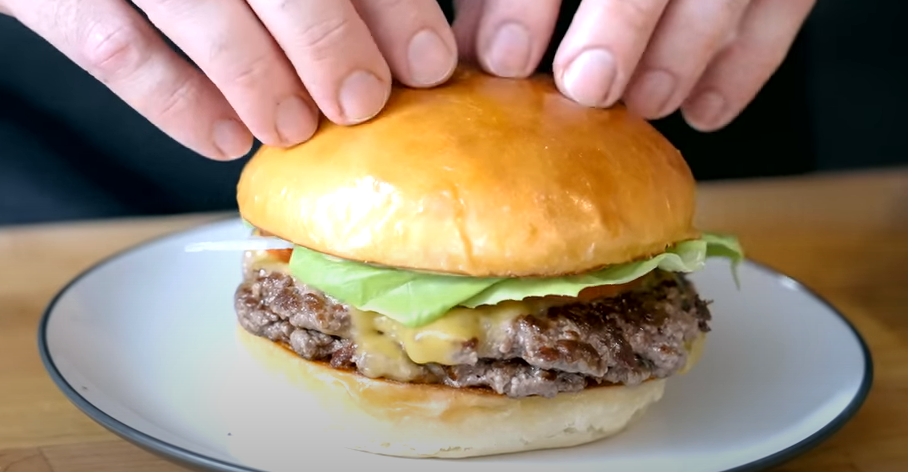

Smash Burger

Ingredients
Potato Buns Ingredients
- 415 g bread flour
- 45 g potato flakes
- 1 Tbsp instant yeast
- 1 Tbsp kosher salt
- 2 Tbsp sugar
- 170 g water (75-80 F)
- 110 g whole milk (75-80 F)
- 2 eggs, room temperature
- 4 Tbsp unsalted butter, cubed + room temperature
- Egg wash (see recipe below)
Egg Wash Ingredients
- 1 egg
- 1 egg yolk
- Pinch of salt
Smash Burgers Ingredients
- 16 oz chuck, ground
- 8 oz brisket, ground
- 8 oz boneless short rib, ground
- As needed neutral oil
- To taste kosher salt
- To taste freshly ground black pepper
- American cheese
- Potato buns, roasted
- Butter lettuce
- Beefsteak tomato, sliced
- White onion, thinly sliced
- Bread and Butter pickles, sliced
- Special sauce (see recipe below)
Special Sauce Ingredients
- 1/2 cup mayo
- 1/2 cup ketchup
- 1/3 cup mustard
- 1/4 cup onion, grated
- 1 garlic clove, grated
- 1/2 tsp hot paprika
- 1 Tbsp relish